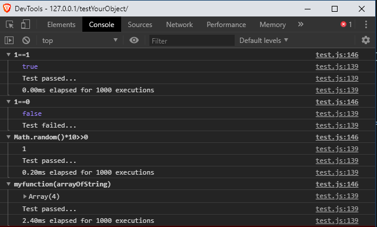

If you want to verifiy that yout tested function ()=>1==1 return the true value then code
Test.run(()=>1==1,true)
See the result below
For this sample, the test is passed because the attempted value is equal to the result value.
As the test passed, the tested function is reruned 1000 times to mesure his performance.
Test failed
If your want to verifiy that yout tested function ()=>1==0 return true value then code
Test.run(()=>1==0,true)
For this sample the test is failed because the attempted value is diffrent to the result value.
Control function
If the tested fuction do not return a constant value the code a control function :
- tested function Math.random()*10>>0
- control function e=>e<10
Write your test code as is Test.run(()=>Math.random()*10>>0,null,e=>e<10)
The result is
Performance computing - setting number of iterations
By default, the tested function is rerun 1000 times.
You would like to change the numbr of iterations by calling the Test.setRepeat(n) method.
Test.setRepeat(200)
Now, for the next sample, the performance computing called only 200 times the tested function.
Performance computing - setting context
The performance computing done after the test passed may need a specific context reuse after every run of the tested function.
In the case, you need to code an init function to prepare the context.
Sample var arrayOfString = ["orange","banana","citrus","apple"] var myfunction = e => e = e.sort() Test.run(()=>myfunction(arrayOfString),null,e=>e[0]=="apple",() => arrayOfString = ["orange","banana","citrus","apple"])
The result is
Console log
By default, the tests' results are log into the navigator console.
To do not log, you need to call the Test.devToolsMute() method
To reactive the log, you need to call the Test.devToolsLoud() method

Test report
To obtain a test report about all tests, you need to call the Test.results() method.
See the report as below